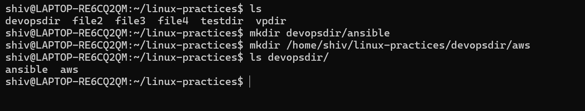
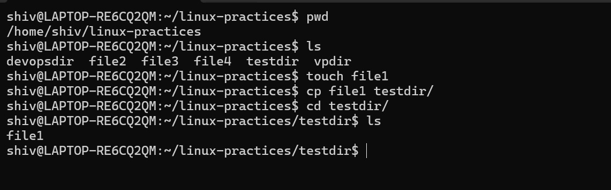
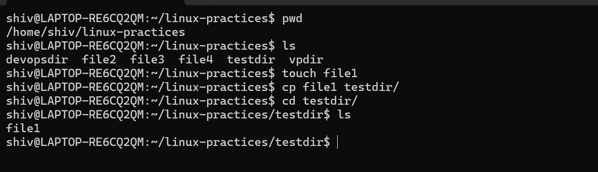

If you see all these paths did not start with / directory.
Creating directories in devopsdir directory with absolute and relative path.

Copying files into directory.

Copying directories from one location to another.
